|
|||||
|
6
|
|||||
|
Interpretations
of
Rational Number Concepts* |
|||||
|
Thomas R.
Post
|
|||||
|
For a variety of reasons rational number concepts are among the most important concepts children will experience during their presecondary years. From a practical perspective, the ability to deal effectively with rational numbers vastly improves one's ability to understand and deal with situations and problems in the real world. From a psychological perspective, an understanding of rational number provides a rich ground from which children can develop and expand the mental structures necessary for continued intellectual development. From a mathematical point of view, rational number understandings are the foundation on which basic algebraic operations will later be based. Students have consistently experienced significant difficulty dealing with and applying these concepts. Perhaps one reason is that for the most part school programs tend to emphasize procedural skills and computational aspects rather than the development of important foundational understandings. Recent developments in the mathematical, psychological, and instructional realms have revealed important insights into the problems involved in teaching rational number concepts to children. The cause for concern The mathematics assessment of the National Assessment of Educational Progress (NAEP) was conducted in 1972-73 and again in 1977-78. It assessed outcomes on mathematics items related to objectives at four cognitive levels: knowledge, skills, understandings, and applications. Commenting on the results of the second assessment, Carpenter and his colleagues (Carpenter et al. 1980, p. 47) made the following generalizations:
What conditions led to this rather disappointing state of affairs? We suspect the reasons are many; including much premature abstraction of mathematical ideas and a general lack of attention to higher-order thinking skills. A recent examination of three widely used 1978 mathematics text series revealed that by far the greatest emphasis in time spent on rational number concepts (as inferred by the number of pages) is on developing skills with algorithms. This practice continues despite repeated assertions that premature emphasis of algorithmic learning will result in an inability to internalize, operationalize, and apply this concept in an appropriate manner (Carpenter et al. 1978, 1980; Freudenthal1973; Payne 1976). Another probable reason relates to the level of abstraction at which much instruction is focused. Children are expected to operate at the abstract symbolic level too often and too soon. Piaget has suggested that children pass through qualitatively different stages of intellectual development in a predictable order but at varying rates. The stages have been referred to as sensory-motor, preoperational, concrete operational, and formal operational. Children at the age where fractions are normally introduced and developed in the school program will generally be at the concrete operational level. Their ability to synthesize, make deductions, and follow if/then arguments very much depends on their personal experience and firsthand interactions with the environment. Some instructional considerations Donnelly and Behr (1978) observed that many recent studies have imposed a linear model on Bruner's three modes of representational thought: first the enactive phase, then the iconic phase, and finally the symbolic phase. More realistically, these phases should be incorporated into a non-linear interactive model. Such a model was suggested by Lesh (1979). This model clarifies certain "translation" processes between modes or phases of representation. The modes of representation identified in the model (see fig. 6.1) are real-world situations, spoken symbols, written symbols, pictures, and concrete (manipulative) models. This model does not imply that one particular mode is always more significant than another. Nor does it imply that an individual uses all translation processes in a given learning/problem-solving setting. 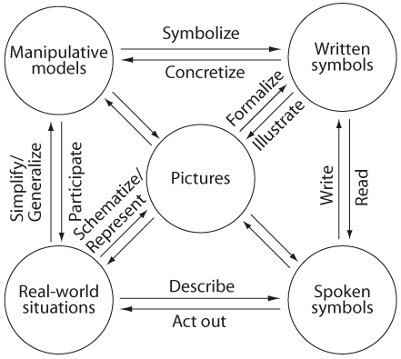 Often, however, two or more of the identified modes will coexist within a given problem setting or instructional sequence. We hypothesize here that it is the translations among and within certain of these modes that make ideas meaningful for children. We suggest that this model be imposed on the mathematical interpretations of rational number, which we shall discuss later. Since understanding a mathematical concept implies the kinds of processes indicated in this model, students should become involved in these translations as they learn about rational number concepts. Some psychological considerations Two psychological variables that can be consciously attended to in the instructional process are abstraction and generalization. The model suggested in this section can be viewed as a bridge between these aspects of conceptual development and the design and implementation of instructional activities. Dienes (1967) suggests that learning is enhanced when children are exposed to a concept in a variety of physical contexts. That is, their experiences should differ in outward appearance while retaining the same basic conceptual structure. This is known as perceptual variability. For example, Cuisenaire rods, geoboards, graph paper, and sets of counters can all be used to depict rational number. By experiencing the concept in a number of physical contexts, the child will be more likely to abstract the similarities and discard the irrelevant discrepancies. Dienes also asserts that generalization is enhanced when a concept is viewed from a number of different conceptual perspectives. (This is known as mathematical variability.) These two ideas can be incorporated in a two-dimensional matrix (fig. 6.2). Each cell in this matrix implies both a type of physical or symbolic activity and a mathematical perspective from which to view the concept. Instructional activities need to be selected so as to give students exposure across both rows and columns. The ultimate value in such a model is that psychological factors (in this case abstraction and generalization) are consciously attended to when constructing instructional activities for children. 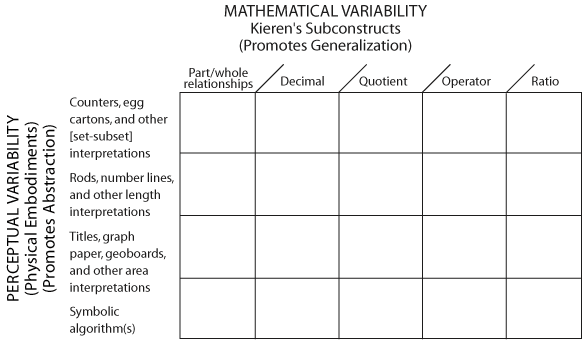
The rational number subconstructs that we shall discuss later are not new to school mathematics programs. Kieren (1976) has provided a detailed conceptual analysis of rational number, highlighting hierarchies of subskills within various interpretations of rational number. The part-whole subconstruct. The part-whole interpretation of rational number is represented in both continuous (length, area, and volume) and discrete (counting) situations. This subconstruct depends directly on the ability to partition either a continuous quantity or a set of discrete objects into equal-sized subparts or sets. Part-whole applies only when two sets, A and B, are compared and set A is a subset of set B. In addition, the following criteria are satisfied:
Thus, one can interpret the shaded area of as two-thirds of the whole because the conditions above have been satisfied. That is, the shaded area (set A, part of the whole) consists of two parts that are equivalent to each other. Set B (the whole) has been divided into three equivalent parts. Note also that each part of A is also equivalent to each part of B. In this example, the quantity is area, but it could just as easily be volume, length, or number. It does not make sense to speak of the shaded portion of this triangle as one-third of the area of the triangle, since the parts into which the whole has been divided are not equivalent. This invalidates conditions 2 and 3 above. 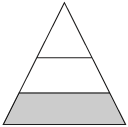 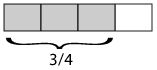 From such statements as 2/4 and 1/4 = []/[], associated with demonstrations or pictures, children easily generalize to symbolic statements such as 5/13 and 2/13 = []/[], or 13/72 and 24/72 = []/[], and finally to a/b + c/b = (a + c) /b. The association between unit and non unit fractions also seems to make the transition particularly easy from fractions of a size less than or equal to 1 to those of a size greater than 1. For example, 5/4 becomes 1/4 + 1/4 + 1/4 + 1/4 + 1/4, or 1 whole and 1/4. The part-whole subconstruct seems to be crucial in providing "pre-concept" activity for equivalence and order relations and for operations on rational numbers. The demonstration of the equivalence (or nonequivalence) of fractions based on manipulative materials requires the ability to "repartition" a continuous object or a set of discrete objects. The multiplication of rational numbers can be introduced as an extension of the multiplication of whole numbers-as the problem of finding a part of a part, or a fraction of a fraction. Figure 6.3 shows how paper folding and chips can be used to exemplify 3/4 x 2/3. 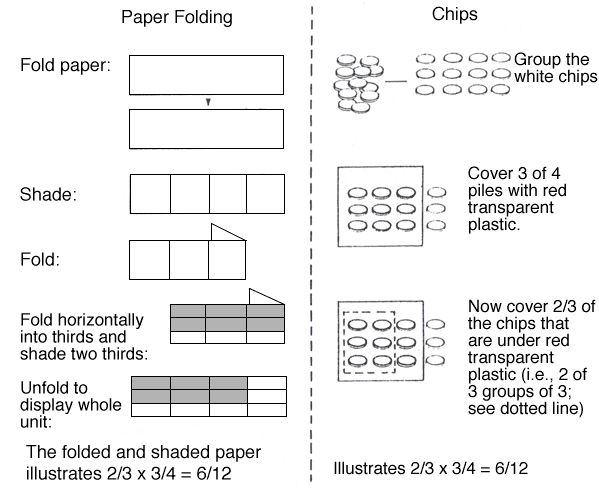 Fig. 6.3 This is an example of perceptual variability. The concept is illustrated here in both a continuos (area) and a discrete (chips) embodiment. Rational number as decimal fraction. A rational number is any number that can be expressed as a terminating or repeating decimal. The decimal fraction interpretation of rational number is closely related to the part-whole subconstruct discussed earlier. Length (number line), area, and volume, which are referred to as measure systems (Osborne 1976), are useful contexts within which to embed decimal ideas. The symbol system for fractions as decimals is a logical extension of the base-ten numeration system for whole numbers. A manipulative aid that uses the part-whole subconstruct as a basis for decimals and is similar to paper folding can be made by using apiece of paper one decimeter square as a unit; this unit is partitioned with lines into 10 and 100 equal-sized parts. Figure 6.4 illustrates the aid and shows a representation of 1.36 as 1 + 3/10 + 6/100, or 1.00 + 0.3 + 0.06. This embodiment is also useful for helping children learn to compare rational number with decimal notation. Figure 6.5 illustrates a comparison of 0.2 and 0.12. From the diagram a child is able to see that more is shaded to display 0.2 than to display 0.12; they can thus conclude that 0.2 > 0.12. To relate the decimal interpretation of rational number to the number line, a meter stick is a useful model for both comparing and adding decimals (fig. 6.6). 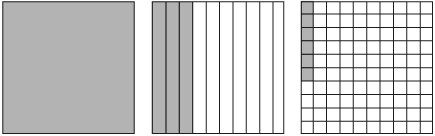 Fig. 6.4 A paper-folding representation of 1.36 based on the part-whole subconstruct of rational number. 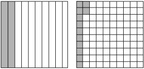 Fig. 6.5. A comparison of 0.2 and 0.12 It is crucial to an adequate understanding of fractions as decimals that children internalize the equivalent meaning of such symbols as 0.36 and 36/100 and 3/4 and 75/100. The importance of this understanding is apparent when children face the task of comparing fractions in terms of relations (less than, equal to, and greater than) and when they must perform operations with decimals. Folding a one-square-meter piece of paper will help children visualize the comparative size of products. Figure 6.7 shows how such a unit can help children internalize the comparative sizes of 0.2 x 0.4 and 0.02 x 0.4. 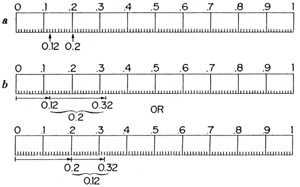 Fig. 6.6 A meterstick is a us4eful model both for comparing decimals (a) and for adding them (b). 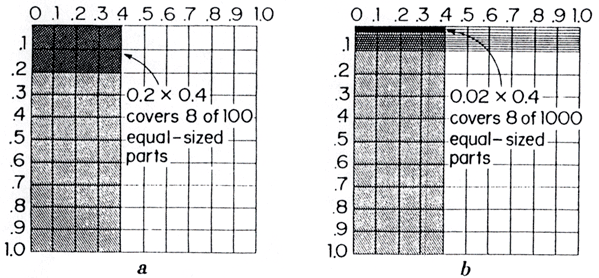 Fig. 6.7. A folded square of paper can help children visualize 0.2 x 0.4 and 0.02 x 0.4 and the comparative "sizs" of the two products.
Rational numbers as indicated divisions and elements of a quotient field. Rational numbers as quotients can be considered at several levels of sophistication. On the one hand, 8/4 or 2/3 interpreted as an indicated division results in establishing the equivalence of 8/4 and 2, or 2/3 and 6. On the other hand, rational numbers can be considered as elements of a quotient field and as such can be used to define equivalence, addition, multiplication, and other properties from a purely deductive perspective. The major cognitive structure involved in, and actually generated by, the quotient interpretation is that of partitioning. This notion is also crucial to several of the other subconstructs, but in the case of quotient it is accomplished in a two-stage process, since parts must be recombined following the partitioning process. Consider and example:
When b does not divide a, we have a classic rational-number-as-quotient situation with a non-integral solution. Thus the problem of dividing three pizzas equally among four persons can be solved by cutting (partitioning) each of the three pizzas into four equivalent parts 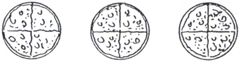 and then distributing one part from each pizza to each individual: 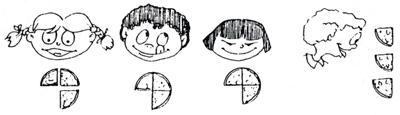 Thus, each person will receive 1/4 + 1/4 + 1/4, or 3/4. Other situations in which young children may find it useful to think about a/b as an indicated operation is when an electronic calculator is used to add fractions. For example, if a calculator is used to find 2/5 + 3/8 = [], the problem can be solved using the following steps:
In most problems that youngsters encounter in everyday situations the answer 0.775 is as useful (or more so) than the answer 31/40, and so there is no need to convert from decimal notation back to fractional notation. Rational number as operator. This subconstruct of rational number imposes on a rational number p/q an algebraic interpretation; p/q is thought of as a function that transforms a geometric figure to a similar geometric figure p/q times as big, or as a function that transforms a set into another set with p/q times as many elements. When operating on a continuous object (length), we think of p/q as a stretcher-shrinker combination. Any line segment of length 1 operated on by p/q is stretched to p times its length and then shrunk by a factor of q. For example, the function 3/2 would initially triple the length of the unit segment and then halve that length. Thus, the unit length would, under this transformation, become 3/2. Likewise, a length of 4 would be transformed by the operator 3/2 into 12/2 [(4 x 3) -7- 2]. In a similar manner, a multiplier-divider interpretation is given to p/q when it operates on a discrete set. The rational number p/q transforms a set with n elements to a set with np elements, and then this number is reduced to np ÷ q. Figure 6.8a displays a "two-thirds machine" that has accomplished a 2-for-3 transformation. Figure 6.8b suggests that the two-thirds machine can also accomplish a 4-for-6 transformation. That is, two groups of three results in two groups of two. This can be relabeled as 4/6. The two diagrams together suggest that four-sixths machines and two-thirds machines produce equivalent results. It is then concluded that 4/6 = 2/3. An interesting situation
arises when the machine is directed to operate on The function machine will generate equivalent but perceptually different results if it is directed to operate on the whole set or on individual pieces. For example, if we put 3 in a 2-for-3 (two-thirds) machine, then we would get:
Rational numbers can be multiplied through a hookup of two function machines. We find 2/3 x 5/6 by applying a 2-for-3 machine to the output of a 5-for-6 machine and then finding the single machine that would accomplish the resulting input-output transformation. This is illustrated in figure 6.9. Children can see from the model that the hook-up accomplishes a 10-for-18 transformation, which can also be done with a single 10/18 machine. This suggests that 2/3 x 5/6 equals 10/18. In this case, 18 was chosen as the initial input so that the 2-for-3 machine would have a whole number output. Procedures for finding such "optional" input numbers are analogous to finding common denominators. 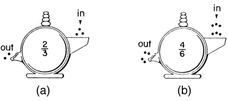 Fig. 6.8. Displays to show how the function-machine model (1) represents the rational number 2/3 and (2) suggests that 2/3 and 4/6 are equivalent fractions 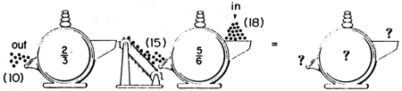 Fig. 6.9. Display to illustrate how the function-machine model is used to embody multiplication of rational numbers Rational number as ratio. Ratio is the special case of a fraction where the equivalent parts of set A are the subsets consisting of the individual elements. Likewise, the equivalent parts of set B are the subsets consisting of its individual elements. For example, when comparing the set of boys (set A) to the set of girls (set B) in figure 6.10, a comparative index (ratio) of 10 to 20 is generated. Note that 10 to 20 (sometimes written as 10/20, although 10 to 20 is generally preferred) describes the overall comparative relationship between the numerosity of the two sets. 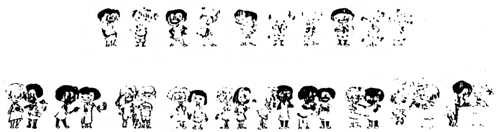 Fig. 6.10 Equivalent ratios are generated by redefining the individual elements, or comparative unit, and comparing the two sets from a slightly different perspective (fig. 6.11): 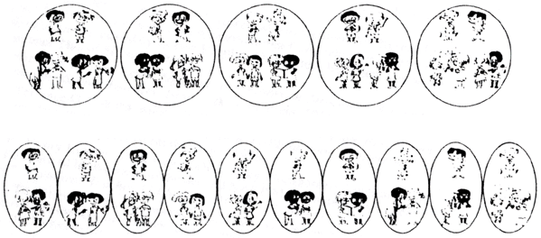 Thus. 10 to 20, 2 to 4, and 1 to 2 are equivalent ratios, since each describes a way in which these two sets can be compared. Note that each comparison exhausts all the elements in each set and requires-
A much more common question about ratios is whether one is less than, equal to, or greater than another. When two ratios are equal, they are said to be in proportion to one another. A proportion is simply a statement equating two ratios. Problems can often be restated in terms of one ratio and half of a second (and equivalent) ratio. The solution amounts to calculating the missing term. Problem: If
candy costs 40 cents for 3 pieces, how much This problem can be restated thus: 40
= N Ratios can also be considered as ordered pairs of numbers and depicted graphically as points on the Cartesian grid. Points representing equivalent ratios will always lie on a straight line that passes through the origin (0,0). The reciprocal of the ratio represented is, in fact, the slope of the line. Such graphs can be used to generate additional equivalent ratios and to identify the missing element in a proportion. This can be done because the line completely defines the relationship for all ratios equivalent to the given ratio. Consider again the problem about the candy: 40
= N To find N in this proportion, first plot the known relation (3,40), connect with point (0,0), and extend (see fig. 6.12). Now locate 5 (the known part of the second ratio), proceed vertically until the line defining the relationship between cost and pieces is reached, then read the cost directly opposite on the vertical axis (the unknown part of the second ratio). 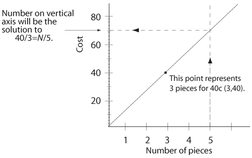 Obviously the equation 40/3 = N/5 can also be solved symbolically: 3N
= 5.40 The graph, however, is a useful device to illustrate a wide variety of problem settings and to depict problem conditions physically. Incidentally, such experiences with graphing during the middle school years leads nicely into the graphing of more abstract relations, such as y = 2x + 3, at a later time. A final word about learning and manipulative materials Different materials may be useful at different points in the development of rational number concepts. The goal is to identify manipulative activities using concrete materials whose structure fits the structure of the particular rational number sub-concept being taught and ultimately perhaps to fit also the learning styles of individual students. The magnitude of what is known about how children learn the concept of rational number has increased considerably during the past decade. As new knowledge is gained, additional questions invariably arise. There is still a great deal to learn. Although rational number has been used to illustrate these points, the basic ideas are believed to apply to the learning of mathematics in general. BIBLIOGRAPHY Begle, Edward G. The Mathematics of the Elementary School. chaps. 12 and 18. New York: McGraw-Hill Book Co., 1975. Behr. Merlyn. Thomas Post, and Diane Briers. "Theoretical Foundations for Research on Rational Numbers." In Proceedings of the Fourth International Conference for the Psychology of Mathematics Education, edited by Robert Karplus. Duplicated. Berkeley: University of California, Lawrence Hall of Science" 1980. Bell, Max S., K. Fuson, and Richard Lesh. Algebraic and Arithmetic Structures: A Concrete Approach for Elementary School Teachers. New York: Free Press, 1976. Carpenter, Thomas, Terrence G. Coburn, Robert E. Reys, and James W. Wilson. Results from the First Mathematics Assessment of the National Assessment of Educational Progress. Reston, Va.:, National Council of Teachers of Mathematics, 1978. Carpenter, Thomas P., Henry Kepner. Mary Kay Corbitt, Mary Montgomery Lindquist. and Robert E. Reys." Results and Implications of the Second NAEP Mathematics Assessments: Elementary School." Arithmetic Teacher 27 (April, 1980): 10-12,44-47. Coburn, Terrence G. "The Effect of a Ratio Approach and a Region Approach on Equivalent Fractions and Addition/Subtraction for Pupils in Grade Four." (Doctoral dissertation. University of Michigan, 1973.) Dissertation Abstracts International 34 (1974): 4688A-4689A. Dienes, Z. P. Building
Up Mathematics. Rev. ed. London: Hutchinson Educational, 1967. Dienes, Z. P., and E. W. Golding. Approach to Modern Mathematics. New York: Herder & Herder,1971. Donnelly, Martin, and Merlyn Behr. "Review of Research on Manipulative Aids." Duplicated. De Kalb, III.: Northern Illinois University, 1978. Ellerbruch, Larry W., and Joseph N. Payne. "A Teaching Sequence from Initial Fraction Concepts through the Addition of Unlike Fractions." In Developing Computational Skills, 1978 Yearbook of the National Council of Teachers of Mathematics, edited by Marilyn N. Suydam. Reston, Va.: The Council, 1978. Freudenthal, Hans. Mathematics as an Educational Task. Dordrecht, Holland: D. Reidel Publishing Co., 1973. Hartung, M. L. "Fractions and Related Symbolism in Elementary-School Instruction." Elementary School Journal 58 (April 1958): 377-84. Karplus, Elizabeth F., Robert Karplus, and Warren Wollman. "Intellectual Development beyond Elementary School IV: Ratio, the Influence of Cognitive Style." School Science and Mathematics 74 (October 1974): 476-82. Karush, William. The Crescent Dictionary of Mathematics. New York: Macmillan Co., 1962. Kieren, Thomas E. "On the Mathematical, Cognitive, and Instructional Foundations of Rational Numbers." In Number and Measurement, edited by Richard A. Lesh and David A. Bradbard. Columbus, Ohio: ERIC/SMEAC, 1976. Lesh, Richard A. "Mathematical Learning Disabilities: Considerations for Identification, Diagnosis and Remediation." In Applied Mathematical Problem Solving, edited by Richard Lesh, pp. 111-80. Columbus, Ohio: ERICISMEAC, 1979. . _____"Some Trends in Research and the Acquisition and Use of Space and Geometry Concepts." In Papers from the Second International Conference for the Psychology of Mathematics Education, edited by Heinrich Bauersfeld, pp. 193-213. Bielefeld, W. Germany: Institute for Didactics in Mathematics, 1979. National Assessment of Educational Progress. The Mathematics Objectives. Denver: NAEP, Education Commission of the States, 1970. Noelting, Gerald. "The Development of Proportional Reasoning and the Ratio Concept (The Orange Juice Experiment)." Duplicated. Quebec: Ecole de Psychologie, Universite Laval, 1979. _____"The Development of Proportional Reasoning in the Child and Adolescent through Combination of Logic and Arithmetic." In Osnabrucker Schriften zur Mathematik, Proceedings of the Second International Conference for the Psychology of Mathematics Education, edited by E. Cohors-Fresenborg and I. Wachsmuth, pp. 242-77. Osnabruck, W. Germany: University of Osnabruck, 1978. Osborne, Alan R." Mathematical Distinctions in the Teaching of Measure." In Measurement in School Mathematics, 1976 Yearbook of the National Council of Teachers of Mathematics, edited by Doyle Nelson, pp. 11-34. Reston, Va: The Council, 1976. Payne, Joseph N." Review of Research on Fractions." In Number and Measurement, edited by Richard A. Lesh and David A. Bradbard. Columbus, Ohio: ERIOSMEAC, 1976. Post, Thomas R." Fractions: Results and Implications from National Assessment." Arithmetic Teacher 28 (May 1981): 26-31. Post, Thomas R., and Robert E. Reys. "Abstraction, Generalization, and the Design of Mathematical Experiences for Children." In Models for Mathematics Learning, edited by Karen Fuson and William Geeslin. Columbus, Ohio: ERIOSMEAC, 1979. Reys, Robert E., and Thomas R. Post. The Mathematics Laboratory: Theory to Practice. Boston: Prindle, Weber & Schmidt, 1973. Wagner, Sigrid. Conservation of Equation and Function and Its Relationship to Formal Operational Thought. 1976. (ERIC: ED 141 117) Williams, Elizabeth, and Hilary Shuard. Elementary Mathematics Today: A Teacher Resource (Grades 1-8). 2d ed. Reading, Mass.: Addison-Wesley Publishing Co., 1976. * This paper is based in part on research supported by the National Science Foundation under grant number SED 79-20591. Any opinions, findings, and conclusions expressed are those of the authors and do not necessarily reflect the views of the National Science Foundation. (top) |
|||||